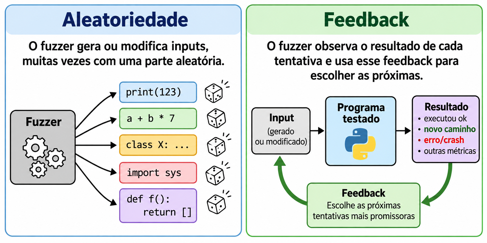
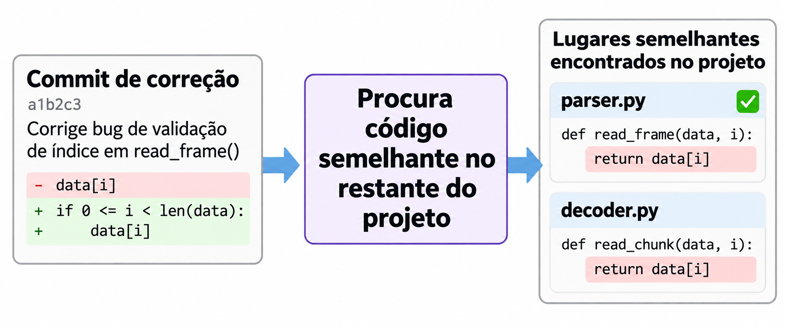

Quebrando o seu código e o
Daniel Diniz
Criado com reveal.jsIntrodução
Um bug!
super.__new__(super).__get__(1)
Program received signal SIGSEGV, Segmentation fault.
supercheck (type=0x0, obj=obj@entry=0x555555c8c9a0 <_PyRuntime+30416>)
at Objects/typeobject.c:12719
12719 type_or_instance, obj_str, type->tp_name);Tipos de bug
Crash
Fluxo inesperado
Estado inconsistente
Resultado errado
Vulnerabilidade
Encontrando bugs
Revisão manual
def max_power(a, b):
"""Maior número na exponenciação de um par."""
if a > b:
result = b ** a
if b < 0 and a % 2 == 0:
result = abs(result)
return result
else:
result = a ** b
if a < 0 and b % 2 == 0:
result = abs(result)
Encontrando bugs
Análise estática

Encontrando bugs
Fuzzing

Encontrando bugs
IA
- code (Python puro)
- cext (extensões C e C++)
- ft (suporte a Free Threading)
- cpython (CPython em si)
- pypy: PyPy, criado por Bhuvansh Kataria.
- rust-ext: extensões em Rust, criado por Charlie Lin.
Encontrando bugs
IA

Desvendando um crash
super.__new__(super).__get__(1)
Traceback (most recent call last):
File "<string>", line 1, in <module>
TypeError: super(type, obj): obj must be an instance or subtype of typeDesvendando um crash
Program received signal SIGSEGV, Segmentation fault.
#0 supercheck (type=0x0, obj=obj@entry=0x555555c8c9a0 <_PyRuntime+30416>)
at Objects/typeobject.c:12719
#1 0x0000555555785116 in super_descr_get (self=self@entry=0x7ffff74f5fe0,
obj=0x555555c8c9a0 <_PyRuntime+30416>, type=0x0)
at Objects/typeobject.c:12753
#2 0x0000555555791f65 in wrap_descr_get (self=0x7ffff74f5fe0,
args=0x7ffff74921c0, wrapped=0x555555785070 <super_descr_get>)
at Objects/typeobject.c:10261
#3 0x00005555556aa9d3 in _PyObject_MakeTpCall (
tstate=0x555555cc63a8 <_PyRuntime+266456>, callable=0x7ffff74f5c20,
args=0x7fffffffc2f8, nargs=1, keywords=0x0) at Objects/call.c:242
#4 0x000055555582b599 in _Py_VectorCallInstrumentation_StackRefSteal (
callable=callable@entry=..., arguments=0x7ffff7fa9080,
total_args=total_args@entry=1, kwnames=kwnames@entry=...,
call_instrumentation=false, frame=frame@entry=0x7ffff7fa9020,
this_instr=0x7ffff7559ef2, tstate=0x555555cc63a8 <_PyRuntime+266456>)
at Python/ceval.c:791Quebrando o Python
class Silly:
def __iter__(self):
raise RuntimeError("Spam spam spam!")
def generator():
yield from Silly()
next(generator())Quebrando o Python
def call(part):
part.pop()
call(['a'])
try:
call(list)
except TypeError:
raiseQuebrando implementações
L = []
L.append(L)
list[L].__parameters__
Quebrando implementações
import itertools
z = itertools.zip_longest([], [1, 2, 3])
next(z)
list(z)
Quebrando implementações
import binascii
binascii.b2a_qp(b'\n')
Quebrando extensões
import numpy as np
arr = np.array([1, 2, 3])
arr.flags["é"] = True
Quebrando extensões
import numpy
numpy.float128().round(-2**31)
Quebrando extensões
from multidict import MultiDict
MultiDict().add(key="k")
Quebrando extensões
from multidict import MultiDict
lista_de_tuples = [(f"k{i}", i) for i in range(64)]
d = MultiDict(lista_de_tuples)
d.extend(d)
Bugs em Python puro
Bugs em Python puro
Bugs no seu código
Bugs no seu código
Lições importantes
Crash é o bug bonzinho: ele avisa
O bug vivo ao lado do bug corrigido
Fluxo de Evidência
Achados candidatos
↓
Reproduzir + cruzar + deduplicar
↓
Evidência priorizada
Do achado à contribuição
achado
↓
reproducer
↓
deduplicação
↓
comunicação + validação
↓
correção
Respeito às pessoas mantenedoras
Conclusão
Contato
devdanzin@gmail.com
https://t.me/devdanzin
https://github.com/devdanzin
https://mastodon.social/@danzin
 https://discuss.python.org/u/devdanzin
https://discuss.python.org/u/devdanzin